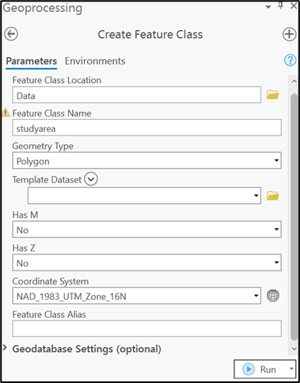
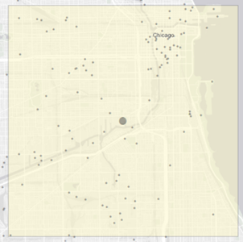

Air quality (both outdoor/ambient and indoor/household) is associated with a broad range of disease outcomes (e.g., asthma, cancer) and is globally responsible for millions of deaths each year (Landrigan 2017). The Clean Air Act (CAA) is the comprehensive US federal law that regulates air emissions from stationary and mobile sources(US EPA 2013). Among other things, the Act authorizes the US Environmental Protection Agency (EPA) to establish National Ambient Air Quality Standards (NAAQS) (EPA 2014) designed to protect public health from six outdoor air pollutants: particulate matter, ozone, nitrogen oxides, sulfur dioxide, carbon monoxide and lead (“criteria” pollutants). The EPA is also required to identify and regulate emissions of hazardous air pollutants (HAPs) which, since 1990, includes 188 pollutants.
Additional reading on the effects of air pollution on health
Each year, the American Lung Association publishes its annual “State of the Air” report (ALA 2022)which examines two of the most widespread and dangerous pollutants from this group, particulate matter and ozone. Other readings concerning the environmental justice implications of land use planning and toxic air pollution include “Incompatible Land Uses and the Topology of Cumulative Risk” (Lejano and Smith 2006) and “Concentrating risk? The geographic concentration of health risk from industrial air toxics across America” (Ard and Bullock 2020).
This exercise involves the evaluation of ambient air concentrations of criteria and toxic pollutants within a student-specified area in California. Students will model concentrations using regularly updated, facility-level emissions made available from the EPA (i.e., AirData National Emmissions Inventory and Toxic Release Inventory), hourly meteorological data from local weather stations and AERMOD, an air dispersion model developed by the EPA.
AERMOD is presently the model recommended for US government agencies to estimate pollutant concentrations from stationary (and mobile) sources in urban areas. AERMOD allows for the specification of multiple sources, facility-specific release patterns (it also allows for specification of uneven terrain and effects of nearby building downwash, but we won’t take advantage of these functions in this exercise). The model requires that hourly wind patterns (direction and speed) and temperature data be input. Near-field models like AERMOD differ from far-field models in that the former are able to capture initial mixing phenomena that occur just after the plume leaves the source (such as a smokestack). The AERMOD near-field model is best suited for study areas no greater than 50km by 50km. For this exercise, students will model a custom study area with dimensions 10km by 10km.
Students will save maps, tables and summaries of spatial analyses in a PowerPoint presentation (or, optionally, a document created with Quarto markdown in R) to be submitted via the course web page. Students are welcome to work collectively with classmates to overcome obstacles experienced while completing the required tasks, although all submissions will be unique given that students will choose their own study areas that have different distributions of pollution sources (and therefore different patterns of air pollutant concentrations). Of course the interpretations will also be your own. As in all assignments for this class, you will be asked to not only produce attractive (strive for cartographic perfection!) and meaningful maps, but also describe patterns presented within them. The three sections below step you through the process to create the above deliverable. (For some of the more complicated procedures, online videos will be made available on the course D2L under the Exercise #2 content folder.)
Create a new R project
In RStudio, create a project within a new directory (e.g., GEO336/exercise_02) of your general course folder. Here you will save files related to exercise #2. Create the following folders within the new exercise-specific directory, “aermod”, “data”, “maps” and “scripts”. Install and/or activate the following packages in R using the below code. Download and unzip the aermod folder contents into your project directory from the GitHub repository.
Code
# install.packages(c("dplyr", "tidyverse", "openxlsx","sf", "sp")) # uncomment and run if install is necessarylibrary(dplyr) # data wrangling with pipe syntaxlibrary(tidyverse) # data wranglinglibrary(openxlsx) # use for importing data in Excel formatlibrary(sf) # simple features data package library(sp) # spatial data package
Part Two: Process input data in RStudio
TRI, NEI and RSEI pollutant data for California
Students will draw from two publicly available datasets for this assignment: NEI and TRI. The National Emissions Inventory (NEI) is a comprehensive and detailed estimate of air emissions of criteria pollutants, criteria precursors, and hazardous air pollutants from air emissions sources. The NEI is released every three years based primarily upon data provided by State, Local, and Tribal air agencies for sources in their jurisdictions and supplemented by data developed by the US EPA. The NEI is built using the Emissions Inventory System (EIS) first to collect the data from State, Local, and Tribal air agencies and then to blend that data with other data sources.
The US EPA’s Toxics Release Inventory (TRI) program tracks the management of certain toxic chemicals that pose a threat to human health and the environment. Large US facilities (i.e., those emitting 10 tons or more per year) in different industry sectors must report annually how much of each chemical is released to the environment and/or managed through recycling, energy recovery and treatment. Data containing the 100 most-used data fields from the TRI Reporting Form R and Form A Certification Statement are made available in various formats on the TRI Basic Data web page for reporting years 1987 to 2020. The data can be downloaded for the entire US or by state.
EPA’s Risk-Screening Environmental Indicators (RSEI) model helps policy makers, researchers, and communities explore data on releases of toxic substances from industrial and federal facilities. The model considers the fate and transport of chemicals through the environment, each chemical’s relative toxicity, and potential human exposure. When combined with the total releases of chemicals by location, RSEI model results can be used to help identify locations of toxic hot spots, monitor potential human health impacts over time, prioritize investigative work and prioritize the allocation of agency resources, more generally. Use the following code to join RSEI toxicity weights to the TRI data.
Code
# Join TRI with RSEI inhalation toxicity weights (ITW)TRI_2020_form_wtd <- TRI_2020_form %>%left_join(RSEI_v2310_form, by ="casno") %>%mutate(stack_air_itw = stack_air * itw/10000000) %>%drop_na(stack_air_itw) %>%select(-itw)
Create and write shapefiles
Save the NEI and TRI air pollution tables as shapefiles into your working directory, perhaps in the “data” folder. If you are choosing to examine an area located within northern California, use UTM 10N (EPSG: 26910) and UTM 11N (EPSG: 26911) if your study area is in southern California. See a general map of the UTM zones for the contiguous United States below.
Code
TRI_2020_form_wtd_geom <-st_as_sf(TRI_2020_form_wtd, coords =c("longitude", "latitude"), crs =4269) %>%st_transform(crs=26911) %>%st_as_sf() # or crs = 26910 if in northern Californiast_write(TRI_2020_form_wtd_geom, "enter working directory and desired file name",append=FALSE)NEI_2017_form_geom <-st_as_sf(NEI_2017_form, coords =c("longitude", "latitude"), crs =4269) %>%st_transform(crs=26911) %>%st_as_sf() # or crs = 26910 if in northern Californiast_write(NEI_2017_form_geom, "enter working directory and desired file name",append=FALSE)
Part Three: Create and add data to ArcGIS Pro project
Add and download spatial data
Create a new ArcGIS Pro project on your computer under the maps directory in your R project folder. In your ArcGIS Pro map project, under the “Map” menu, click the “Add Data” option on the toolbar and navigate to the directory where you exported the NEI and TRI datasets. You may need to click the “Connect to Folder” and navigate to your project directory. Select all three of the files and add to the map frame. They should draw automatically and appear in the table of contents.
You will need to create a custom and spatially explicit study area in order to run the needed calculations. Create your custom study area by doing the following:
Under the “View” menu, click the “Catalog Pane” option to view project contents. Navigate to your project folder and right-click on the “Data” directory to create a new shapefile. With your project directory selected, open the File menu and select the “New/Shapefile” option. In the “Create Feature Class” dialog box, give your polygonal shapefile an appropriate name (e.g., studyarea). Be sure the output coordinate system corresponds with the other shapefiles in your map frame (i.e., UTM Zone 10N, NAD 1983). When finished, add the new shapefile to the map.

In the “Edit” menu, click “Create” to begin delineating the study area polygon. In the “Create Features” dialog, use the square template to construct the polygon. With the pencil tool activated, create a 10km by 10km square by clicking the map to create the initial vertex. Don’t be concerned about the specific location of the initial vertex (and study area) at this time. While still editing, right-click inside the map frame and select the “Direction/Size” option to make visible the associated dialog box. Enter “0” for direction and 10km for both length and width. When finished entering the dimensions click the Enter key on your keyboard to create the new feature.
Part Five: Model facility and cumulative impact of criteria air emissions (SO2)
In this part of the exercise you will analyze the concentrations of sulfur dioxide emitted from a specific facility and then compare this with the cumulative sulfur dioxide emissions (from all facilities) within (and/or near) your study area.
First, identify a single facility in the NEI facilities shapefile that emits considerable amounts of sulfur dioxide (SO2).
Next, center the study area so that the facility you identified is located in the (approximate) center. Do this by clicking on the “Edit” menu and selecting the study area polygon. Use the “Move” tool to position the polygon in the desired location. Under the “Share” menu, click “Capture to Clipboard” and paste the NEI facilities map into the appropriate PowerPoint slide.

“10kmx10km study area with facilities mappeed by annual SO2 emissions (tons)”
Now you will use AERMOD to model emissions from the facility you selected. Read through the AERMOD Primer in Appendix C before proceeding.
Using a text editor (such as notepad or my preference is notetab light freeware), edit aermod.inp so that the source (SO LOCATION) pathway location coordinates (X and Y) reflect those of your selected facility and the source (SO SRCPARAM) parameters reflect the SO2 emissions from the selected facility in the proper units (grams per second). Convert the tons per year to grams per second using the AERMOD_Formatting.xlsx spreadsheet which uses the following formula: quantity in g/s = (tons/year*2000 pounds/year*453.59237 grams/pound)/(365 days/year * 24 hrs/day * 60 minutes/hour * 60 seconds/minute)). Use the default (i.e., existing) settings for the release height, stack gas exit temperature, stack gas exit velocity, and stack diameter (e.g., 76. 353. 5. 3.0) for the facility.
Also edit in aermod.inp the receptor (or RE) pathway so that the bottom, left (southwest vertex in this case) coordinates (the anchor point of the Cartesian grid) reflect those of your study area (you can identify coordinates via the status bar at the bottom right of the ArcGIS Pro map frame or via the Properties/Source/Extent menu by right-clicking on feature layer). Use the existing 200m x 50m parameters for the Cartesian receptor grid (e.g., XYINC 50 [bottom left X coordinate of study area] and 200 [bottom left Y coordinate of study area]). You can again use the AERMODFormatting.xlsx spreadsheet to format this parameter for the aermod.inp file.
Note that we may need to reduce processing time by calculating concentrations for fewer days than what is available in the meteorology files. If it takes too long for your machine to calculate over multiple years it may be necessary to spread the analysis across a select number of days over different months for a single year in order to account for seasonal variations (1/1-1/7; 4/1-4/7; 10/1-10/7; 7/1-7/7). Be sure that the meteorological (ME) pathway refers to the meteorological files for the entire study period/year.
Next set the output (OU) pathway to create four plot files, with each representing key concentrations over given periods of time. The default input file calculates maximum concentrations averaged over one- and three-hour periods. Concentrations will be estimated for each of the 2,500 receptors in your study area. Also rename the output plot files in the OU parameters so they are more informative (e.g., NEI_3HRMAX.PLT, NEI_1HRMAX.PLT).
Now you are ready to run the newly specified model. To run the model, navigate to the directory where aermod.inp, aermod.exe and the associated meteorological files are located. Double-click the aermod.exe executable file (or drag and release aermod.inp over aermod.exe). Allow AERMOD to cycle through the 365 days of each year represented in your meteorological data. If you receive an error, check the sources of the error by reading the ERROR.OUT file in notepad or other text editor.
Once AERMOD has completed the procedure, you will need to re-format the data in the plot file so that it is readable in ArcGIS Pro. First, open the 1-hour maximum concentrations plot file in notepad (under the “Format” menu, be sure the word wrap is off, not checked). Remove much of the header documentation, remove spaces in column names in the plot file so that it appears as follows. Save the edited plot file.
Sample of AERMOD output file
Next, open the plot file in Excel using the default fixed width settings. Remove any spaces and parentheses from the column names (ArcGIS Pro only allows numbers, characters and underscores in field names). Save the text file as a CSV file. Also be sure to close the file in Excel before attempting to open it in ArcGIS Pro.
Return to ArcGIS Pro and open the annual, comma delimited text file. In order to display the model output, click the “Add Data” option in the “Map” menu and select the “XY Point Data” option. ArcGIS Pro will open a “XY Table to Point” dialog. Navigate to the input CSV table you just created. ArcGIS Pro should automatically recognize the X and Y fields in the input file. Specify the output location and feature class as a layer in the project geodatabase (“.shp” suffix). Edit the coordinate system information so that it corresponds with the other shapefiles in the map frame (e.g., UTM Zone 11N, NAD 1983). When finished, click “Run” and the new point layer should be added to the map table of contents. Make visible the layer to show the series of receptor points specified in the AERMOD input file. Next, open the plot file in Excel using the default fixed width settings. Remove any spaces and parentheses from the column names (ArcGIS Pro only allows numbers, characters and underscores in field names). Save the text file as a CSV file. Also be sure to close the file in Excel before attempting to open it in ArcGIS Pro.
Return to ArcGIS Pro and open the annual, tab-delimited text file. In order to display the model output, click the “Add Data” option in the “Map” menu and select the “XY Point Data” option. ArcGIS Pro will open a “XY Table to Point” dialog. Navigate to the input CSV table you just created. ArcGIS Pro should automatically recognize the X and Y fields in the input file. Specify the output location and feature class as a layer in the project geodatabase (“.shp” suffix). Edit the coordinate system information so that it corresponds with the other shapefiles in the map frame (i.e., UTM Zone 11N, NAD 1983). When finished, click “Run” and the new point layer should be added to the map table of contents. Make visible the layer to show the series of receptor points specified in the AERMOD input file.
In order to better display variations in concentrations within your study area, convert the points to grid cells. Do this by clicking the “Tools” option under the “Analysis” menu. In the “Geoprocessing” dialog, type “Point to Raster” to open the associated conversion tool. Specify the output cell size as 200 (to correspond with the parameters specified in the AERMOD input file) and click Run when finished. Create a histogram to show the distributions of values within the raster layer, including the mean, median and standard deviation. Copy and paste the 1-hour maximum concentration map, legend and histogram into the appropriate slide within the PowerPoint template. Also, view the “metadata” tab on the Properties dialog for the raster layer to view statistics for the concentrations field. Populate the appropriate column in the PowerPoint table template (Slide 5) with corresponding values.
Repeat the above three procedures to map the 3-hour concentration plot for the single facility. To complete the remaining maps for part two, refer to the above steps to calculate SO2 emissions from multiple facilities within your study area. For the multiple facilities (or cumulative analysis), begin by selecting all facilities inside and within one kilometer of your study area (hint: use the buffer distance option under the “select by location” option under the “Select” menu). Open the attribute table with selected facilities that emit criteria pollutants. Use the export tool to save selected records in dbf format. Open the dBase file in Excel. In Excel sort the facilities to identify the top five emitters of SO2 and use the provided AERMODFormatting.xls spreadsheet to format source location and source parameter specifications for the five AERMOD facilities.
Lastly compare the modeled pollutant concentrations in your study area to the regulatory reference concentrations (US EPA national air quality standards are organized by pollutant and average concentration period) and write-up your findings. In your write-up, respond to questions concerning the degree to which the primary facility you selected contributes to the pollution burden within your study area. Also consider any limitations or concerns you may have about the model (e.g., what is excluded from the model).
Comparison concentrations
Note that you will need to convert the ppb and ppm standards to ug/m^3 in order to compare with AERMOD output. The 1-hour average primary standard 75 ppb is equal to 196.5 ug/m^3 and the 3-hour average 0.5 ppm secondary standard is equal to 1,310 ug/m^3
Part Six: Model seasonal variation in toxic air concentrations (optional)
Air toxics, unlike “criteria” air pollutants such as ground-level ozone and oxides of nitrogen whose main health impact is their contribution to smog, are more localized in their impact. These substances can contribute to risk of cancer, respiratory illness, and other harms when inhaled. Their unequal distribution across the country and even within communities has often not been remedied successfully even as the Clean Air Act has been relatively successful at cleaning criteria pollutants from the air.
In this part of the exercise, you will estimate toxic air releases within your study area from large, industrial facilities represented in the latest (2020) EPA’s Toxics Release Inventory or TRI report. The TRI reports emissions by facility for each of the 650 toxics and toxic compounds. Given that every chemical has a different dose-response curve or, more simply, a different toxicological profile, you will adjust chemical releases using inhalation toxicity weighted factors (ITW) from EPA’s Risk-Screening Environmental Indicators (RSEI) model. The toxicity-weighted concentrations are provided are an appropriate metric for comparing levels of potential impact between geographic areas and for smaller-scale environmental justice analyses. Further, toxicity-weighted allows concentrations to be added across chemicals for the same geographic area.
For Part Six, you will explore only the maximum 3-hour concentration plot files for the inhalation toxicity weighted (ITW) emissions arising from all facilities within the study area (select multiple facilities using the same procedure used above).
You will alter parameters in the (ME) pathway in order to estimate how the distribution of air concentrations differs seasonally due to changes in wind direction, wind speed and air temperature. This said, you will run four AERMOD models; one for each season. In order to run the season-specific models, change the meteorological pathway (ME) parameters so that it references the appropriate season-specific upper air and surface files (e.g., we will go over the seasonal date ranges in class). As before, for the multiple facilities (or cumulative analysis), select the five facilities within the study area with the highest ITW concentrations. Use the AERMODFormatting.xls spreadsheet to format data for AERMOD input files. Create associated maps and update the corresponding table (Slide 10). Summarize your findings in the write-up for (Slide 11).
References
ALA. 2022. “State of the Air 202.”Chicago, IL: American Lung Association.
Ard, Kerry, and Clair Bullock. 2020. “Chapter 12 - Concentrating Risk? The Geographic Concentration of Health Risk from Industrial Air Toxics Across America.” In Spatiotemporal Analysis of Air Pollution and Its Application in Public Health, edited by Lixin Li, Xiaolu Zhou, and Weitian Tong, 277–92. Elsevier. https://doi.org/10.1016/B978-0-12-815822-7.00012-1.
EPA, US. 2014. “NAAQS Table.” Other {{Policies}} and {{Guidance}}. https://www.epa.gov/criteria-air-pollutants/naaqs-table.
Lejano, Raul P., and C. Scott Smith. 2006. “Incompatible Land Uses and the Topology of Cumulative Risk.”Environmental Management 37 (2): 230–46.
US EPA, OP. 2013. “Summary of the Clean Air Act.” Overviews and {{Factsheets}}. https://www.epa.gov/laws-regulations/summary-clean-air-act.
Source Code
---title: "GEO 3/446 Exercise #2"subtitle: "Air Dispersion Modeling and Visualization"author: C. Scott Smith, PhD AICP (Instructor)email: c.scott.smith@depaul.edudate: "`r format(Sys.time(), '%d %B %Y')`"format: html: echo: true eval: false warning: false code-tools: true code-fold: true theme: [flatly, "../../styles.scss"] toc: true reference-location: documenteditor_options: chunk_output_type: consolebibliography: "../../references.bib"---## BackgroundAir quality (both outdoor/ambient and indoor/household) is associated with a broad range of disease outcomes (e.g., asthma, cancer) and is globally responsible for millions of deaths each year [@landrigan2017]. The Clean Air Act (CAA) is the comprehensive US federal law that regulates air emissions from stationary and mobile sources[@usepa2013]. Among other things, the Act authorizes the US Environmental Protection Agency (EPA) to establish National Ambient Air Quality Standards (NAAQS) [@usepa2014] designed to protect public health from six outdoor air pollutants: particulate matter, ozone, nitrogen oxides, sulfur dioxide, carbon monoxide and lead ("criteria" pollutants). The EPA is also required to identify and regulate emissions of hazardous air pollutants (HAPs) which, since 1990, includes [188 pollutants](https://www.epa.gov/haps/initial-list-hazardous-air-pollutants-modifications).::: {.callout-note collapse="false"}## Additional reading on the effects of air pollution on healthEach year, the American Lung Association publishes its annual "State of the Air" report [@ala2022]which examines two of the most widespread and dangerous pollutants from this group, particulate matter and ozone. Other readings concerning the environmental justice implications of land use planning and toxic air pollution include "Incompatible Land Uses and the Topology of Cumulative Risk" [@lejano2006b] and "Concentrating risk? The geographic concentration of health risk from industrial air toxics across America" [@ard2020].:::This exercise involves the evaluation of ambient air concentrations of criteria and toxic pollutants within a student-specified area in California. Students will model concentrations using regularly updated, facility-level emissions made available from the EPA (i.e., [AirData National Emmissions Inventory](https://www.epa.gov/air-emissions-inventories/national-emissions-inventory-nei) and [Toxic Release Inventory](https://www.epa.gov/toxics-release-inventory-tri-program)), hourly meteorological data from local weather stations and [AERMOD](https://www.epa.gov/scram/air-quality-dispersion-modeling-preferred-and-recommended-models), an air dispersion model developed by the EPA.AERMOD is presently the model recommended for US government agencies to estimate pollutant concentrations from stationary (and mobile) sources in urban areas. AERMOD allows for the specification of multiple sources, facility-specific release patterns (it also allows for specification of uneven terrain and effects of nearby building downwash, but we won't take advantage of these functions in this exercise). The model requires that hourly wind patterns (direction and speed) and temperature data be input. Near-field models like AERMOD differ from far-field models in that the former are able to capture initial mixing phenomena that occur just after the plume leaves the source (such as a smokestack). The AERMOD near-field model is best suited for study areas no greater than 50km by 50km. For this exercise, students will model a custom study area with dimensions 10km by 10km.::: {layout-ncol="2"}:::Students will save maps, tables and summaries of spatial analyses in a [PowerPoint presentation](https://github.com/justenvirons/pedagogy/raw/main/GEO346_2022_FallQuarter/Exercise_02/Exercise02_AirDispersion_SlidesTemplate.pptx) (or, optionally, a document created with Quarto markdown in R) to be submitted via the course web page. Students are welcome to work collectively with classmates to overcome obstacles experienced while completing the required tasks, although all submissions will be unique given that students will choose their own study areas that have different distributions of pollution sources (and therefore different patterns of air pollutant concentrations). Of course the interpretations will also be your own. As in all assignments for this class, you will be asked to not only produce attractive (strive for cartographic perfection!) and meaningful maps, but also describe patterns presented within them. The three sections below step you through the process to create the above deliverable. (For some of the more complicated procedures, online videos will be made available on the course D2L under the Exercise #2 content folder.)## Create a new R projectIn RStudio, create a project within a new directory (e.g., GEO336/exercise_02) of your general course folder. Here you will save files related to exercise #2. Create the following folders within the new exercise-specific directory, "aermod", "data", "maps" and "scripts". Install and/or activate the following packages in R using the below code. Download and unzip the [aermod folder contents](https://github.com/justenvirons/pedagogy/raw/main/GEO346_2022_FallQuarter/Exercise_02/aermod/aermod.zip) into your project directory from the GitHub repository.```{r}#| label: Install and activate R packages#| eval: false# install.packages(c("dplyr", "tidyverse", "openxlsx","sf", "sp")) # uncomment and run if install is necessarylibrary(dplyr) # data wrangling with pipe syntaxlibrary(tidyverse) # data wranglinglibrary(openxlsx) # use for importing data in Excel formatlibrary(sf) # simple features data package library(sp) # spatial data package```## Part Two: Process input data in RStudio### TRI, NEI and RSEI pollutant data for CaliforniaStudents will draw from two publicly available datasets for this assignment: NEI and TRI. The [National Emissions Inventory](https://www.epa.gov/air-emissions-inventories/national-emissions-inventory-nei) (NEI) is a comprehensive and detailed estimate of air emissions of criteria pollutants, criteria precursors, and hazardous air pollutants from air emissions sources. The NEI is released every three years based primarily upon data provided by State, Local, and Tribal air agencies for sources in their jurisdictions and supplemented by data developed by the US EPA. The NEI is built using the Emissions Inventory System (EIS) first to collect the data from State, Local, and Tribal air agencies and then to blend that data with other data sources.The US EPA's [Toxics Release Inventory](https://www.epa.gov/toxics-release-inventory-tri-program/what-toxics-release-inventory) (TRI) program tracks the management of certain toxic chemicals that pose a threat to human health and the environment. Large US facilities (i.e., those emitting 10 tons or more per year) in different industry sectors must report annually how much of each chemical is released to the environment and/or managed through recycling, energy recovery and treatment. Data containing the 100 most-used data fields from the TRI Reporting Form R and Form A Certification Statement are made available in various formats on the [TRI Basic Data web page](https://www.epa.gov/toxics-release-inventory-tri-program/tri-basic-data-files-calendar-years-1987-present) for reporting years 1987 to 2020. The data can be downloaded for the entire US or by state.```{r}#| label: Download, format and save essential datasets#| eval: false# National Emissions Inventory (zip format)temp <-tempfile()download.file("https://gaftp.epa.gov/air/nei/2017/data_summaries/2017v1/2017neiJan_facility.zip",temp)NEI_2017_raw <-read_csv(unz(temp, "emis_sum_fac_15420.csv"))unlink(temp)# format NEI data# filter sulfur dioxide releases in CaliforniaNEI_2017_form <- NEI_2017_raw %>%rename(fac_name =`company name`,site_name =`site name`,fac_street = address,fac_city = city,fac_state =`postal abbreviation`,fac_zip =`zip code`,naics_code =`naics code`,naics_desc =`naics description`,latitude =`site latitude`,longitude =`site longitude`,pollutant_code =`pollutant code`,pollutant_desc =`pollutant desc`,pollutant_type =`pollutant type(s)`,emissions_uom =`emissions uom`,emissions =`total emissions` ) %>%select( fac_name, site_name, fac_street, fac_city, fac_state, fac_zip, naics_code, naics_desc, latitude, longitude, pollutant_code, pollutant_desc, pollutant_type, emissions_uom, emissions ) %>%filter(fac_state =="CA", pollutant_code =="SO2")# Toxics Release Inventory (csv format)TRI_2020_raw <-read_csv("https://enviro.epa.gov/enviro/efservice/MV_TRI_BASIC_DOWNLOAD/year/=/2020/fname/TRI_2020_US.csv/CSV?.csv")# format TRI data# filter data stack air releases in CaliforniaTRI_2020_form <- TRI_2020_raw %>%rename(year =1,fac_name =4,fac_street =5,fac_city =6,fac_county =7,fac_state =8,fac_zip =9,latitude =12,longitude =13,parent_co =15,sector_code =19,sector_name =20,chemical =34,casno =37,srsid =38,caa_chemical =39,carcinogen =43,pfas =44,emissions_uom =46,fugitive_air =47,stack_air =48,water =49,underground =50 ) %>%select( year, fac_name, fac_street, fac_city, fac_county, fac_state, fac_zip, latitude, longitude, parent_co, sector_code, sector_name, chemical, casno, srsid, caa_chemical, carcinogen, pfas, emissions_uom, fugitive_air, stack_air, water, underground ) %>%filter(fac_state =="CA", stack_air >0)# RSEI data (Excel format)RSEI_v2310_raw <-read.xlsx("https://www.epa.gov/system/files/other-files/2022-02/toxicity_data_rsei_v2310.xlsx", sheet=2)RSEI_v2310_form <- RSEI_v2310_raw %>%rename(casno = CASStandard) %>%mutate(itw =as.numeric(ITW)) %>%select(casno, itw)```EPA's Risk-Screening Environmental Indicators (RSEI) model helps policy makers, researchers, and communities explore data on releases of toxic substances from industrial and federal facilities. The model considers the fate and transport of chemicals through the environment, each chemical's relative toxicity, and potential human exposure. When combined with the total releases of chemicals by location, RSEI model results can be used to help identify locations of toxic hot spots, monitor potential human health impacts over time, prioritize investigative work and prioritize the allocation of agency resources, more generally. Use the following code to join RSEI toxicity weights to the TRI data.```{r}#| label: Join RSEI toxicity weights to the TRI data#| eval: false# Join TRI with RSEI inhalation toxicity weights (ITW)TRI_2020_form_wtd <- TRI_2020_form %>%left_join(RSEI_v2310_form, by ="casno") %>%mutate(stack_air_itw = stack_air * itw/10000000) %>%drop_na(stack_air_itw) %>%select(-itw)```### Create and write shapefilesSave the NEI and TRI air pollution tables as shapefiles into your working directory, perhaps in the "data" folder. If you are choosing to examine an area located within northern California, use UTM 10N (EPSG: 26910) and UTM 11N (EPSG: 26911) if your study area is in southern California. See a general map of the UTM zones for the contiguous United States below.```{r}#| label: Create and write shapefiles for importing into ArcGIS Pro#| eval: falseTRI_2020_form_wtd_geom <-st_as_sf(TRI_2020_form_wtd, coords =c("longitude", "latitude"), crs =4269) %>%st_transform(crs=26911) %>%st_as_sf() # or crs = 26910 if in northern Californiast_write(TRI_2020_form_wtd_geom, "enter working directory and desired file name",append=FALSE)NEI_2017_form_geom <-st_as_sf(NEI_2017_form, coords =c("longitude", "latitude"), crs =4269) %>%st_transform(crs=26911) %>%st_as_sf() # or crs = 26910 if in northern Californiast_write(NEI_2017_form_geom, "enter working directory and desired file name",append=FALSE)```## Part Three: Create and add data to ArcGIS Pro project### Add and download spatial dataCreate a new ArcGIS Pro project on your computer under the maps directory in your R project folder. In your ArcGIS Pro map project, under the "Map" menu, click the "Add Data" option on the toolbar and navigate to the directory where you exported the NEI and TRI datasets. You may need to click the "Connect to Folder" and navigate to your project directory. Select all three of the files and add to the map frame. They should draw automatically and appear in the table of contents.Also download the [California county, air basin and air district boundary file](https://ww3.arb.ca.gov/ei/gislib/boundaries/ca_co_ab_dis.zip) from the [California Air Resources Board (CARB) GIS Library web page](https://ww2.arb.ca.gov/geographical-information-system-gis-library). These boundaries will be helpful to identify the entity that provides AERMOD-ready meteorological data given that AERMOD requires such data to estimate the geographic distribution of releases over time.::: {.callout-note collapse="false"}## Meteorological dataThe California Air Resources Board (CARB) makes available [AERMOD-ready meteorological data for 28 select weather stations throughout the state](https://ww2.arb.ca.gov/resources/documents/harp-aermod-meteorological-files) while the various air quality districts make available similarly formatted data for weather stations within their respective jurisdictions. Links to the district-specific weather station and data are also available on the [ARB meteorological data webpage](https://ww2.arb.ca.gov/resources/documents/harp-aermod-meteorological-files).:::## Part Four: Create Study AreaYou will need to create a custom and spatially explicit study area in order to run the needed calculations. Create your custom study area by doing the following:- Under the "View" menu, click the "Catalog Pane" option to view project contents. Navigate to your project folder and right-click on the "Data" directory to create a new shapefile. With your project directory selected, open the File menu and select the "New/Shapefile" option. In the "Create Feature Class" dialog box, give your polygonal shapefile an appropriate name (e.g., studyarea). Be sure the output coordinate system corresponds with the other shapefiles in your map frame (i.e., UTM Zone 10N, NAD 1983). When finished, add the new shapefile to the map.{width="3in"}- In the "Edit" menu, click "Create" to begin delineating the study area polygon. In the "Create Features" dialog, use the square template to construct the polygon. With the pencil tool activated, create a 10km by 10km square by clicking the map to create the initial vertex. Don't be concerned about the specific location of the initial vertex (and study area) at this time. While still editing, right-click inside the map frame and select the "Direction/Size" option to make visible the associated dialog box. Enter "0" for direction and 10km for both length and width. When finished entering the dimensions click the Enter key on your keyboard to create the new feature.{width="1.5in"}## Part Five: Model facility and cumulative impact of criteria air emissions (SO2)In this part of the exercise you will analyze the concentrations of sulfur dioxide emitted from a specific facility and then compare this with the cumulative sulfur dioxide emissions (from all facilities) within (and/or near) your study area.- First, identify a single facility in the NEI facilities shapefile that emits considerable amounts of sulfur dioxide (SO2).- Next, center the study area so that the facility you identified is located in the (approximate) center. Do this by clicking on the "Edit" menu and selecting the study area polygon. Use the "Move" tool to position the polygon in the desired location. Under the "Share" menu, click "Capture to Clipboard" and paste the NEI facilities map into the appropriate PowerPoint slide.{width="2in"}Now you will use AERMOD to model emissions from the facility you selected. Read through the AERMOD Primer in Appendix C before proceeding.- Using a text editor (such as notepad or my preference is notetab light freeware), edit aermod.inp so that the source (SO LOCATION) pathway location coordinates (X and Y) reflect those of your selected facility and the source (SO SRCPARAM) parameters reflect the SO2 emissions from the selected facility in the proper units (grams per second). Convert the tons per year to grams per second using the [AERMOD_Formatting.xlsx](https://github.com/justenvirons/pedagogy/raw/main/GEO346_2022_FallQuarter/Exercise_02/aermod/AERMODFormatting.xls) spreadsheet which uses the following formula: quantity in g/s = (tons/year\*2000 pounds/year\*453.59237 grams/pound)/(365 days/year \* 24 hrs/day \* 60 minutes/hour \* 60 seconds/minute)). Use the default (i.e., existing) settings for the release height, stack gas exit temperature, stack gas exit velocity, and stack diameter (e.g., 76. 353. 5. 3.0) for the facility.- Also edit in aermod.inp the receptor (or RE) pathway so that the bottom, left (southwest vertex in this case) coordinates (the anchor point of the Cartesian grid) reflect those of your study area (you can identify coordinates via the status bar at the bottom right of the ArcGIS Pro map frame or via the Properties/Source/Extent menu by right-clicking on feature layer). Use the existing 200m x 50m parameters for the Cartesian receptor grid (e.g., XYINC 50 \[bottom left X coordinate of study area\] and 200 \[bottom left Y coordinate of study area\]). You can again use the [AERMODFormatting.xlsx](https://github.com/justenvirons/pedagogy/raw/main/GEO346_2022_FallQuarter/Exercise_02/aermod/AERMODFormatting.xls) spreadsheet to format this parameter for the aermod.inp file.- Note that we may need to reduce processing time by calculating concentrations for fewer days than what is available in the meteorology files. If it takes too long for your machine to calculate over multiple years it may be necessary to spread the analysis across a select number of days over different months for a single year in order to account for seasonal variations (1/1-1/7; 4/1-4/7; 10/1-10/7; 7/1-7/7). Be sure that the meteorological (ME) pathway refers to the meteorological files for the entire study period/year.- Next set the output (OU) pathway to create four plot files, with each representing key concentrations over given periods of time. The default input file calculates maximum concentrations averaged over one- and three-hour periods. Concentrations will be estimated for each of the 2,500 receptors in your study area. Also rename the output plot files in the OU parameters so they are more informative (e.g., NEI_3HRMAX.PLT, NEI_1HRMAX.PLT).- Now you are ready to run the newly specified model. To run the model, navigate to the directory where aermod.inp, aermod.exe and the associated meteorological files are located. Double-click the aermod.exe executable file (or drag and release aermod.inp over aermod.exe). Allow AERMOD to cycle through the 365 days of each year represented in your meteorological data. If you receive an error, check the sources of the error by reading the ERROR.OUT file in notepad or other text editor.- Once AERMOD has completed the procedure, you will need to re-format the data in the plot file so that it is readable in ArcGIS Pro. First, open the 1-hour maximum concentrations plot file in notepad (under the "Format" menu, be sure the word wrap is off, not checked). Remove much of the header documentation, remove spaces in column names in the plot file so that it appears as follows. Save the edited plot file.- Next, open the plot file in Excel using the default fixed width settings. Remove any spaces and parentheses from the column names (ArcGIS Pro only allows numbers, characters and underscores in field names). Save the text file as a CSV file. Also be sure to close the file in Excel before attempting to open it in ArcGIS Pro.- Return to ArcGIS Pro and open the annual, comma delimited text file. In order to display the model output, click the "Add Data" option in the "Map" menu and select the "XY Point Data" option. ArcGIS Pro will open a "XY Table to Point" dialog. Navigate to the input CSV table you just created. ArcGIS Pro should automatically recognize the X and Y fields in the input file. Specify the output location and feature class as a layer in the project geodatabase (".shp" suffix). Edit the coordinate system information so that it corresponds with the other shapefiles in the map frame (e.g., UTM Zone 11N, NAD 1983). When finished, click "Run" and the new point layer should be added to the map table of contents. Make visible the layer to show the series of receptor points specified in the AERMOD input file. Next, open the plot file in Excel using the default fixed width settings. Remove any spaces and parentheses from the column names (ArcGIS Pro only allows numbers, characters and underscores in field names). Save the text file as a CSV file. Also be sure to close the file in Excel before attempting to open it in ArcGIS Pro.- Return to ArcGIS Pro and open the annual, tab-delimited text file. In order to display the model output, click the "Add Data" option in the "Map" menu and select the "XY Point Data" option. ArcGIS Pro will open a "XY Table to Point" dialog. Navigate to the input CSV table you just created. ArcGIS Pro should automatically recognize the X and Y fields in the input file. Specify the output location and feature class as a layer in the project geodatabase (".shp" suffix). Edit the coordinate system information so that it corresponds with the other shapefiles in the map frame (i.e., UTM Zone 11N, NAD 1983). When finished, click "Run" and the new point layer should be added to the map table of contents. Make visible the layer to show the series of receptor points specified in the AERMOD input file.{width="2.5in"}- In order to better display variations in concentrations within your study area, convert the points to grid cells. Do this by clicking the "Tools" option under the "Analysis" menu. In the "Geoprocessing" dialog, type "Point to Raster" to open the associated conversion tool. Specify the output cell size as 200 (to correspond with the parameters specified in the AERMOD input file) and click Run when finished. Create a histogram to show the distributions of values within the raster layer, including the mean, median and standard deviation. Copy and paste the 1-hour maximum concentration map, legend and histogram into the appropriate slide within the [PowerPoint template](https://github.com/justenvirons/pedagogy/raw/main/GEO346_2022_FallQuarter/Exercise_02/Exercise02_AirDispersion_SlidesTemplate.pptx). Also, view the "metadata" tab on the Properties dialog for the raster layer to view statistics for the concentrations field. Populate the appropriate column in the PowerPoint table template (Slide 5) with corresponding values.{width="2.5in"}- Repeat the above three procedures to map the 3-hour concentration plot for the single facility. To complete the remaining maps for part two, refer to the above steps to calculate SO2 emissions from multiple facilities within your study area. For the multiple facilities (or cumulative analysis), begin by selecting all facilities inside and within one kilometer of your study area (hint: use the buffer distance option under the "select by location" option under the "Select" menu). Open the attribute table with selected facilities that emit criteria pollutants. Use the export tool to save selected records in dbf format. Open the dBase file in Excel. In Excel sort the facilities to identify the top five emitters of SO2 and use the provided AERMODFormatting.xls spreadsheet to format source location and source parameter specifications for the five AERMOD facilities.- Lastly compare the modeled pollutant concentrations in your study area to the regulatory reference concentrations ([US EPA national air quality standards](https://www.epa.gov/criteria-air-pollutants/naaqs-table) are organized by pollutant and average concentration period) and write-up your findings. In your write-up, respond to questions concerning the degree to which the primary facility you selected contributes to the pollution burden within your study area. Also consider any limitations or concerns you may have about the model (e.g., what is excluded from the model).::: {.callout-note collapse="false"}## Comparison concentrationsNote that you will need to [convert the ppb and ppm standards to ug/m\^3](https://www.breeze-technologies.de/blog/air-pollution-how-to-convert-between-mgm3-%C2%B5gm3-ppm-ppb/) in order to compare with AERMOD output. The 1-hour average primary standard 75 ppb is equal to 196.5 ug/m\^3 and the 3-hour average 0.5 ppm secondary standard is equal to 1,310 ug/m\^3:::## Part Six: Model seasonal variation in toxic air concentrations *(optional)*Air toxics, unlike "criteria" air pollutants such as ground-level ozone and oxides of nitrogen whose main health impact is their contribution to smog, are more localized in their impact. These substances can contribute to risk of cancer, respiratory illness, and other harms when inhaled. Their unequal distribution across the country and even within communities has often not been remedied successfully even as the Clean Air Act has been relatively successful at cleaning criteria pollutants from the air.In this part of the exercise, you will estimate toxic air releases within your study area from large, industrial facilities represented in the latest (2020) EPA's Toxics Release Inventory or TRI report. The TRI reports emissions by facility for each of the 650 toxics and toxic compounds. Given that every chemical has a different dose-response curve or, more simply, a different toxicological profile, you will adjust chemical releases using inhalation toxicity weighted factors (ITW) from EPA's Risk-Screening Environmental Indicators (RSEI) model. The toxicity-weighted concentrations are provided are an appropriate metric for comparing levels of potential impact between geographic areas and for smaller-scale environmental justice analyses. Further, toxicity-weighted allows concentrations to be added across chemicals for the same geographic area.For Part Six, you will explore only the maximum 3-hour concentration plot files for the inhalation toxicity weighted (ITW) emissions arising from all facilities within the study area (select multiple facilities using the same procedure used above).You will alter parameters in the (ME) pathway in order to estimate how the distribution of air concentrations differs seasonally due to changes in wind direction, wind speed and air temperature. This said, you will run four AERMOD models; one for each season. In order to run the season-specific models, change the meteorological pathway (ME) parameters so that it references the appropriate season-specific upper air and surface files (e.g., we will go over the seasonal date ranges in class). As before, for the multiple facilities (or cumulative analysis), select the five facilities within the study area with the highest ITW concentrations. Use the AERMODFormatting.xls spreadsheet to format data for AERMOD input files. Create associated maps and update the corresponding table (Slide 10). Summarize your findings in the write-up for (Slide 11).